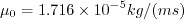
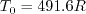
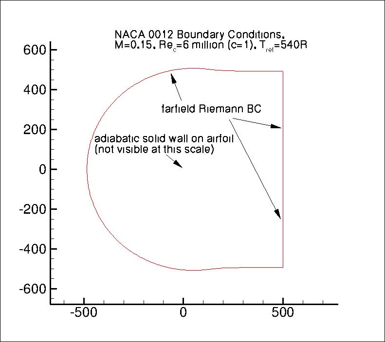
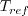
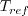

|
Langley Research CenterTurbulence Modeling Resource |
|
Langley Research CenterTurbulence Modeling Resource |
Return to: Turbulence Modeling Resource Home Page
TURBULENCE MODEL NUMERICAL ANALYSIS
2D NACA 0012 Airfoil Validation Case
This case is designed primarily for numerical analysis of turbulence model
simulations; e.g., convergence properties, effect of order of accuracy, etc.
This is the same NACA 0012 case defined and use in the Validation
section of this website (see:
2D NACA 0012 Airfoil Validation Case).
However, here the emphasis is placed on numerics. For this purpose, new families of extremely fine grids
have been created. In particular, these families explore the influence of different grid streamwise spacing at the
trailing edge, which can greatly influence the convergence properties ("goodness" of
results as a function of grid size) for these cases.
The families use
a definition of the NACA 0012 airfoil that
is slightly altered from the original definition so that the airfoil closes at chord=1 with a sharp trailing edge.
To do this, the exact NACA 0012 formula
y= +- 0.6*[0.2969*sqrt(x) - 0.1260*x - 0.3516*x2 + 0.2843*x3 - 0.1015*x4]
is used to create an airfoil between x=0 and x=1.008930411365 (the T.E. is sharp
at this location). Then the airfoil is scaled down by
1.008930411365. Thus, the resulting airfoil is a perfect scaled copy of the 0012, with maximum thickness of approximately 11.894% relative
to its chord (the original NACA 0012 has a maximum thickness of 12% relative to its blunted chord, but it, too,
has a maximum thickness of 11.894% relative to its chord extended to 1.008930411365).
The revised definition is:
y= +- 0.594689181*[0.298222773*sqrt(x) - 0.127125232*x
- 0.357907906*x2 + 0.291984971*x3
- 0.105174606*x4]
NOTE: Prior to 6/23/2014, there was a typo in the original scaled formula provided on this page. It was written:
y= +- 0.594689181*[0.298222773*sqrt(x) - 0.127125232*x
- 0.357907906*x2 + 0.291984971*x3
- 0.105174696*x4] (typo underlined).
With the typo, there was a slight order 10-8
non-closure at the trailing edge (T.E.) (and very small influence throughout).
Although the influence of the typo has been found to be insignificant, the provided grids in the link below
have been updated to reflect the correct formula as of 6/23/2014.
The turbulent NACA 0012 airfoil case should be run with a compressible CFD code that solves the full Navier-Stokes equations.
See details on the page: Implementing Turbulence Models into the Compressible RANS Equations.
The Prandtl number Pr is taken to be constant at 0.72, and turbulent Prandtl
number Prt is taken to be constant at 0.9.
The heat capacity ratio ( where
,
, and
.
The same formula can be found online
(with temperature constants given in degrees K and some small conversion differences).
Note that in terms of the reference quantities for this particular case, Sutherland's Law can equivalently be written:
where
Conditions for this case are M = 0.15, Reynolds number per chord is Re = 6 million, alpha = 10 deg,
reference temperature = 540 R.
Boundary layers should be fully turbulent over most of the airfoil.
Inflow conditions for the turbulence variables should be reported.
The following plot shows the layout of the provided NACA 0012
grids, along with typical boundary conditions.
The grids have a farfield extent of about 500c. Nonetheles, a farfield point vortex
boundary condition correction is recommended (see
Thomas and Salas, AIAA Journal 24(7):1074-1080, 1986,
https://doi.org/10.2514/3.9394).
While this correction is relatively small for such a large
farfield extent, its influence will be noticeable at the detailed levels being investigated here. It is believed that
results using the point vortex correction on the 500c grid will be better representative of results obtained on a
grid with farfield boundary at infinity.

Tref = 540 R is the freestream static temperature for this case.
The farfield boundary conditions are based on inviscid characteristic methods, as sketched above. The viscous wall condition
is specified as an adiabatic wall condition.
This case was used as a verification test case for
Drag Prediction Workshop 5 (DPW-5) and
Drag Prediction Workshop 6 (DPW-6).
The quantities of interest for comparison are as follows:
There are some experimental data available for validation; see
2D NACA 0012 Airfoil Validation Case.
What to Expect:
(Other turbulence model results may be added in the future.)
Return to: Turbulence Modeling Resource Home Page
Recent significant updates: Responsible NASA Official:
Ethan Vogel  ) is 1.4.
The dynamic viscosity is computed using
Sutherland's Law (See White, F. M., "Viscous Fluid Flow," McGraw Hill, New York, 1974, p. 28).
In Sutherland's Law, the local value of dynamic viscosity is determined by plugging the local value of temperature
(T) into the following formula:
) is 1.4.
The dynamic viscosity is computed using
Sutherland's Law (See White, F. M., "Viscous Fluid Flow," McGraw Hill, New York, 1974, p. 28).
In Sutherland's Law, the local value of dynamic viscosity is determined by plugging the local value of temperature
(T) into the following formula:
 is the reference dynamic viscosity that corresponds to the freestream in this case, and
freestream  (as defined on the
previous
page) is 540R. This latter form may be more convenient for nondimensional codes.
(Specific details regarding an implementation of Sutherland's Law in nondimensional codes can be found in
handwritten notes describing Sutherland's Law in CFL3D and FUN3D.)
is the reference dynamic viscosity that corresponds to the freestream in this case, and
freestream  (as defined on the
previous
page) is 540R. This latter form may be more convenient for nondimensional codes.
(Specific details regarding an implementation of Sutherland's Law in nondimensional codes can be found in
handwritten notes describing Sutherland's Law in CFL3D and FUN3D.)
RESULTS
LINK TO EQUATIONS
MRR Level
SA
SA eqns
4
01/10/2017 - added mention of gamma and added link to RANS implementation page
Page Curator:
Clark Pederson
Last Updated: 11/10/2021